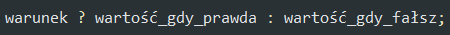
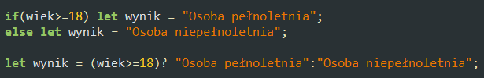

Operator warunkowy
W pewnych przypadkach można użyć operatora warunkowego jako skróconego zapisu instrukcji if...else. Operator warunkowy zwraca jedną z wartości, w zależności od spełnienia lub nie spełnienia podanego warunku.
Przykład użycia operatora warunkowego zastępującego instrukcję if...else:
Zadanie 4.
W bloku znajdującym się niżej dołącz skrypt, w którym rozwiążesz zadanie 1 stosując operator warunkowy.